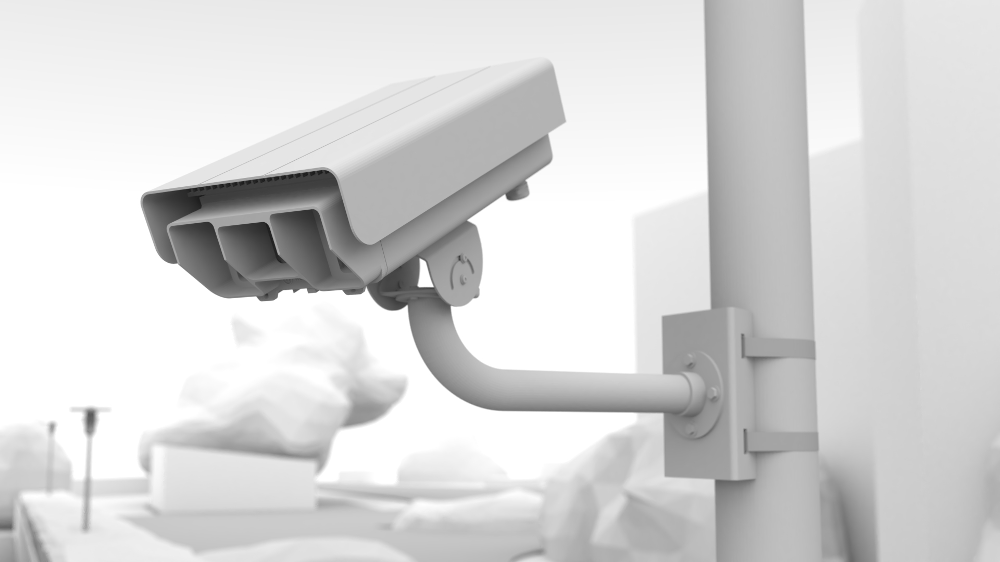

4. Devices¶
This chapter describes the key/specific devices for the vehicle identification system.
4.1. ANPR camera¶

The ANPR camera is a digital camera that provides a video stream suitable for license plate detection and license plate recognition. This camera has specific features:
image resolution of at least HD (1280×720p)
high sensitivity of the CMOS sensor allowing good (bright) images at shutter speed ≤1 millisecond,
the ability to provide both color (day) and monochrome (night) images,
switchable “day / night” modes – switchable, mechanical infrared filter,
motorized lens or a motorized CMOS sensor position control system that allows remote focusing without physical access to the camera,
a good-quality infrared-corrected lens with a focal length that allows the field of view to be set to 1÷3 lanes, with automatic iris control,
built-in infrared illuminator that allows proper operation at night (invisible light in the range of 850÷940 nm),
encryption of the connection to the client software, using SSL/TLS and X.509 certificates,
the ability to enforce authentication (
user|pass) by which it is protected from unauthorized use,H.264 video streaming with adjustable stream quality,
built-in interface for diagnostics (SNMP),
time synchronization capability, e.g. via NTP,
specialized housing that reduces fogging of the windshield and has a shield against direct contact with sunlight,
a suitable mounting bracket with precise adjustment of the camera position in at least 2 axes.
Attention
The ANPR camera does not process the video stream, i.e. it has no built-in processor for data analysis.
4.2. Smartcamera¶
The smart camera has all the features of an ANPR camera, plus:
has a built-in CPU on which the video stream is processed,
has terminal functions, i.e. generates highly processed data (information on captured vehicles),
has a local storage drive (SSD) on which it can collect and buffer data,
is equipped with dedicated software (firmware)
4.3. Smartphone¶
A standard smartphone equipped with NeuroCar Stream VI software running on the Android operating system can also be a data source.
4.4. CPU¶

The CPU controller is an industrial computer, mounted in a telecommunications cabinet, whose task is to process the video stream from ANPR cameras, buffer the data, and then send it to the central BackOffice system. This computer has the following features:
industrial design, without moving parts – no fans, convection heat dissipation,
is ready to work in an extended temperature range,
is resistant to vibration,
is sufficiently powerful (Intel i5 or i7 class processor, appropriate RAM size),
has built-in storage - disk (SSD)
has a number of communication interfaces (ETH, RS-232/485, GPIO, USB2, USB3, HDMI/DVI),
has the ability to extend with a communication modem (miniPCIe) or a dedicated PCIe expansion card,
is powered by DC voltage in the range of 12÷24V DC.